文献阅读 --- Single-cell transcriptomics of adult macaque hippocampus reveals neural precursor cell populations
文献信息
题目: 成年猕猴海马的单细胞转录组学揭示了神经前体细胞群
DOI: https://doi.org/10.1038/s41593-022-01073-x
Cite: Hao, ZZ., Wei, JR., Xiao, D. et al. Single-cell transcriptomics of adult macaque hippocampus reveals neural precursor cell populations. Nat Neurosci 25, 805–817 (2022).
Abstract：
在成年灵长类动物中发生神经发生(neurogenesis)的程度仍存在争议。在这项研究中，使用优化的 single-cell RNA sequencing pipeline，我们分析了来自成年猕猴海马的 207,785 个细胞，并鉴定了包含所有主要海马细胞类型的 34 个细胞群。对它们的基因表达、规范轨迹和基因调控网络的分析显示，存在所有关键的神经源性前体细胞群，包括放射状胶质样细胞(radial glia-like cells，RGLs)、中间祖细胞(intermediate progenitor cells，IPCs)和神经母细胞(neuroblasts，NB)。我们鉴定出 HMGB2 是一种新的 IPC 标记物。与小鼠单细胞转录组数据的比较显示，不同物种之间的神经源性过程存在差异。我们证实了 neurogenesis 在成年灵长类动物的体外神经球培养中被再现，进一步支持了能够增殖和分化的神经前体细胞(neural precursor cells，NPCs)的存在。我们的大规模数据集为灵长类动物提供了一个全面的成年神经发生图谱。
Results：
Fig1. 解剖成年猕猴的海马细胞和分子特征
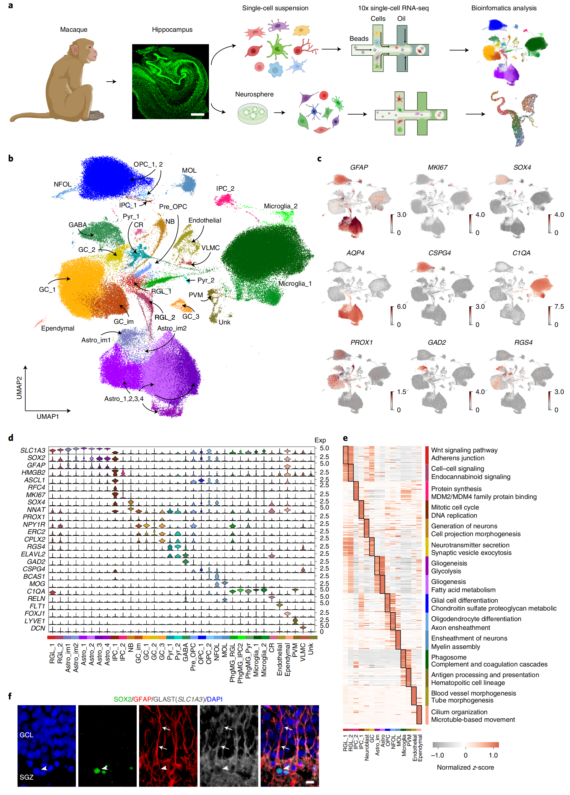
a. 工作流程示意图，从 8 只成年猕猴 (雄性 6 只，雌性 2 只) 中收集了包含 DG 区域的海马细胞，通过 10x Genomics 测得了 207,785 个细胞。
b. 207,785 个细胞聚类的 UMAP 展示，一共聚类成了 34 个群。
cd. 注释类群的 marker gene
(1) neuroglia 神经胶质：
Astro, Astrocytes 星形胶质细胞;（AQP4+）
Astro_im, immature astrocytes 未成熟星形胶质细胞;（AQP4+）
OPC, oligodendrocyte progenitor cells 少突胶质祖细胞; （C1QL1+）
NFOL, newly formed oligodendrocytes 新生少突胶质细胞; （BCAS1+）
MOL, mature oligodendrocytes 成熟少突胶质细胞; （MOG+）
(2) neurons 神经元：
GABA, GABAergic neurons GABA能神经元; （GAD2+）
Pyr, pyramidal neurons 锥体神经元; （RGS4+）
GC_im, immature granule cells 未成熟颗粒细胞; （PROX1+）
GC, granule cells 颗粒细胞; （PROX1+）
(3) vascular cells 血管细胞：
Endothelial，内皮细胞；（FLT1+）
VLMC, vascular leptomeningeal cells 软脑膜血管细胞; （DCN+）
(4) immune cells 免疫细胞：
Microglia，小胶质细胞；（ C1QA+）
PVM, perivascular macrophages 血管周围巨噬细胞; （LYVE1+）
(5) CR, Cajal–Retzius cells; （RELN+）
(6) Ependymal，室管膜细胞；（CFAP126+）
(7) NPCs，neural precursor cells 神经前体细胞：
RGL_1 and RGL_2, radial glia-like cells 放射状胶质样细胞; （SLC1A3+）
IPC，intermediate progenitor cells 中间祖细胞; IPC_1（HMGB2+ASCL1+）
IPC_2（HMGB2+ASCL1− ）
NB, neuroblasts 神经母细胞; （SOX4+）
(8) Unk, Unknown；
除了已知的 marker genes，新发现了一些 marker genes：
IPCs：RFC4
neuroblasts：NNAT
GCs：NPY1R
e. 每个细胞群标记基因的功能注释。RGLs 与 local environment 广泛地相互作用，从而在适当的水平上限制它们的增殖。cell-cell signaling pathways 在 RGLs 中上调，包括 Wnt signaling pathway，这是 RGLs 的主要调控通路之一。
f. 放射状胶质样细胞(radial glia-like cells，RGLs)被认为是在成年海马中发现的神经干细胞(neural stem cells，NSCs)。RGLs 与星形胶质细胞(astrocytes)密切相关，同时表达典型的星形胶质细胞标记基因(GFAP)和神经前体(neural precursor)标记基因 SOX2 和 SLC1A3。免疫荧光染色证实了在猕猴海马 DG 的 SGZ 中存在 RGLs。
Fig2. 使用注释数据集验证猕猴海马细胞群
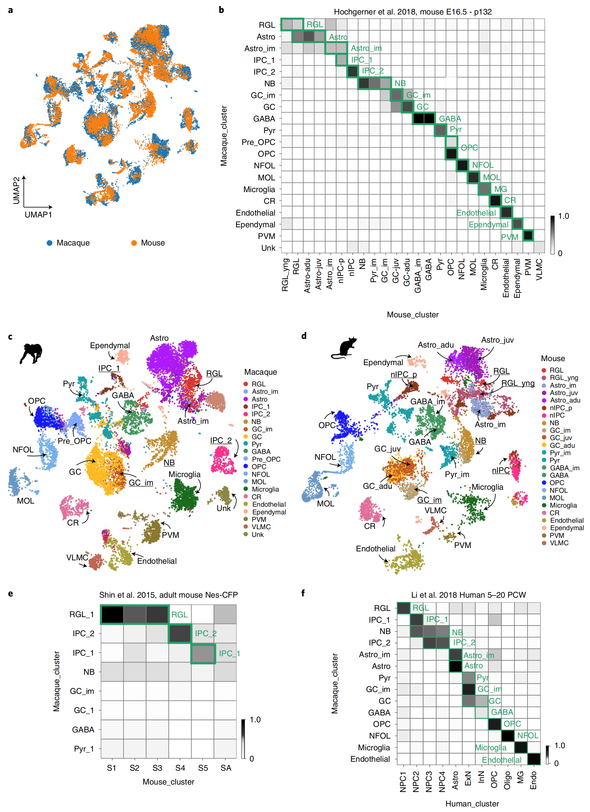
a. 使用 scVI 对猕猴(n=15,878 cells)和小鼠(n=9,810 cells，Hochgerer_1 dataset)数据集之间整合的 UMAP 可视化，然后使用 Harmony 算法。
b. 猕猴和小鼠之间的细胞类型同源性分析。大多数猕猴的海马细胞类型能与小鼠的对应细胞对齐，这表明海马细胞在灵长类动物和啮齿类动物之间是保守的。
cd. 按照 a 中的 UMAP 坐标对猕猴和小鼠的细胞进行注释。
e. 猕猴 neural genesis cells and neurons (n=800 cells) 和小鼠 NPCs(n=132 cells) 之间的整合。
f. 猕猴(n=15,878 cells)和人类胚胎细胞(n=6,323 cells)之间的整合。
Fig3. RGLs 和 astrocytes 是不同的群体
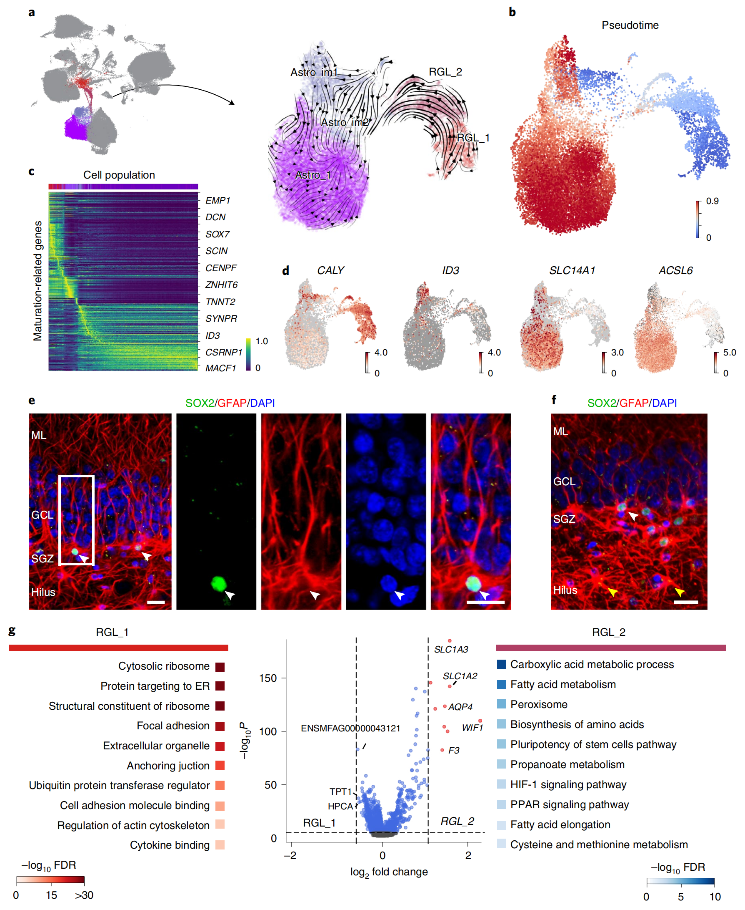
由于 astrocytes 与 RGLs 的标记基因表达相似性较高，数据整合无法区分 RGLs 与 astrocytes。为了区分 RGLs 和 immature astrocytes，我们使用 scVelo 算法计算了 RGLs 和 astrocytes 的 RNA velocity，以推断这些群体之间的分化轨迹(trajectories)。scVelo 可以推断每个细胞在 neurogenesis 中的表达梯度，并通过比较 newly transcribed, unspliced pre-mRNAs with mature, spliced mRNAs 的丰度，提供一个在神经发生过程中解开亚群的工作假设。利用该算法，我们推断了从 RGLs 到 astrocytes 的 astrocyte genesis trajectory。
a. 突出显示 RGL 和 astrocyte maturation-related 群体的 UMAP 分布 (RGL_1, n= 1,107 cells; RGL_2, n= 1,246; Astro_im1, n= 1,661; Astro_im2, n= 698; Astro_1, n= 12,322)，而 RNA velocities (RNA速度) 则显示为箭头。
b. scVelo 拟时序分析 UMAP 可视化，从早期（蓝色）到晚期（红色）。astrocyte genesis trajectory 从 RGL_1 开始，通过 RGL_2 和 immature astrocytes，并最终到达 mature astrocytes，支持了我们对 RGLs 的鉴定。
c. 热图显示了拟时序相关基因的表达，上边的 colorbar 为 a 中的星形胶质细胞类群，右边标记了部分基因。
d. 区分 immature astrocytes 和 astrocytes 的拟时序相关基因的 UMAP 分布。
e. DG 中 RGL markers (SOX2 和 GFAP) 的免疫染色显示，长长的顶端突起(apical processes)从 SGZ 分支到 ML(白色方框)。
f. GFAP 免疫染色显示 hilus 内有 astrocytes（黄色箭头），其形态与 RGLs 不同。
g. RGL_1 和 RGL_2 之间的 5575 个 DEGs，以及 GO 和 KEGG 富集分析。RGL_1 中上调的基因富含蛋白质合成和细胞-基质相互作用。而 RGL_2 群体中一些细胞信号通路和增殖相关基因表达上调。这些基因包括调控 Wnt pathway 的 WIF1(Wnt inhibitory factor 1)；RGCC（regulator of cell cycle），调节细胞周期和增殖，并参与平衡 NSCs (neural stem cell) 的自我更新和分化。TPT1 编码肿瘤蛋白，翻译控制1蛋白进行细胞增殖。
Fig4. 成年猕猴海马 DG 的动态神经发生过程
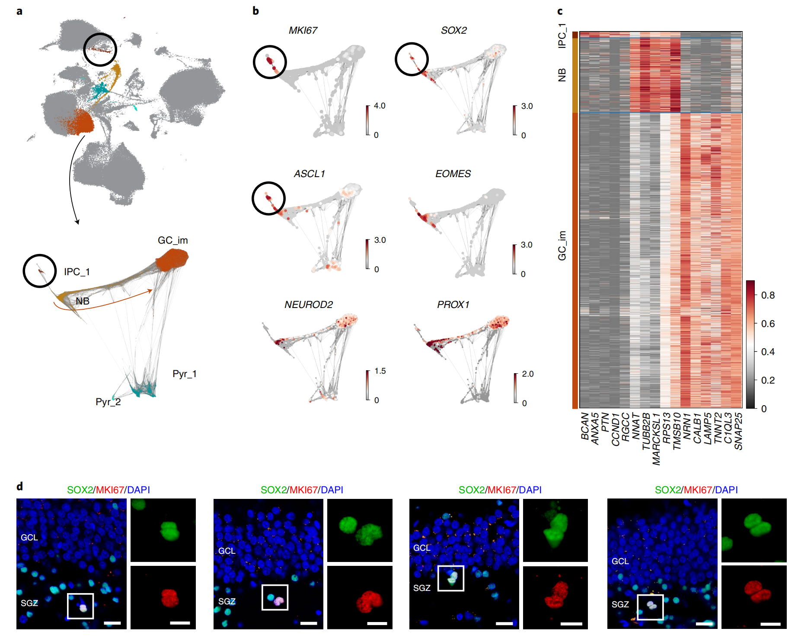
a. 突出显示 neurogenic-related 和 immature GCs 群体的 UMAP 分布以及 mKNN graph plot。
IPCs (n= 163 cells, 黑圈) 链接到 neuroblasts (n= 1,904 cells) and GC_im cells (n= 7,547 cells), 而锥体神经元被分开 (Pyr_1 and Pyr_2, n= 1,384 and 123 cells)。mKNN 分析揭示了从 IPC_1 经过 neuroblasts 到 immature GCs 的轨迹，而 neuroblasts 和 pyramidal neurons 之间几乎没有任何连系。
b. 如 a 中 mKNN graphs 对 proliferating cells(MKI67)、 NPCs(SOX2)、IPCs(ASCL1)、 neuroblasts(EOMES and NEUROD2) 和 immature GCs (PROX1) 中高表达的基因进行染色。这与从细胞增殖到神经元分化的神经发生过程相一致。
c. 热图显示了在每个细胞群中高表达的标记基因的表达。x轴代表基因，而y轴代表细胞。
d. 脑切片中神经前体标记物 SOX2(precursor cell marker) 和 MKI67(proliferating cell marker) 的共免疫染色，捕获了核分裂前（左图）、中（中间图）和后（右图）期的细胞分裂过程，进一步验证了成年灵长类动物中增殖的 NSCs (neural stem cell) 的存在。
Fig5. HMGB2 与 RGL 和 IPCs 之间的过渡相关
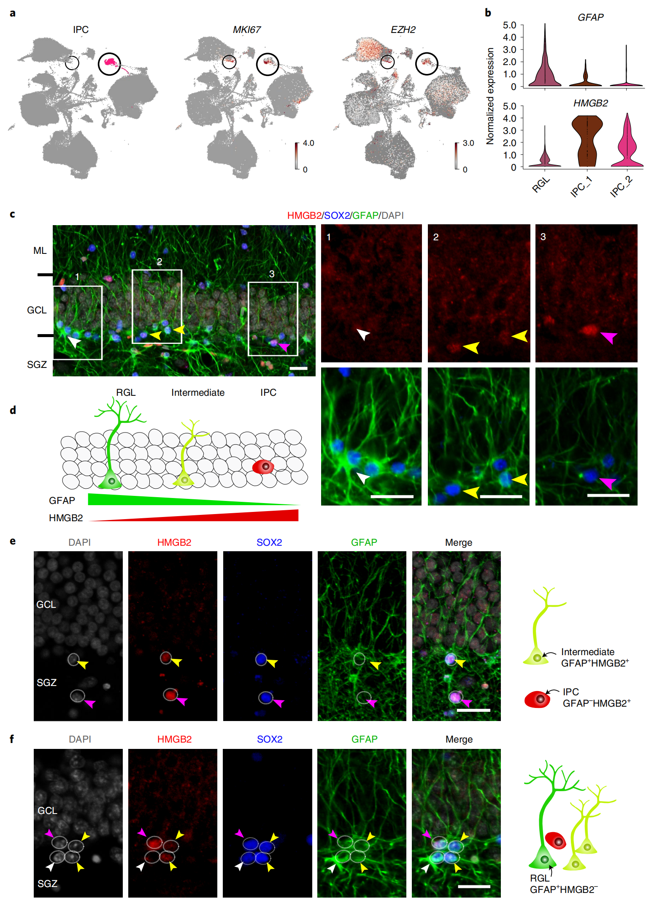
a. IPCs 的 UMAP 可视化和增殖标记物 MKI67 和表观遗传调控基因 EZH2 的表达水平。IPCs 用黑色的圆圈表示。IPC_2 是另一个正在增殖的群体，这些细胞的一个子集表达 EZH2，编码神经命运表观遗传调节因子，推断它们的命运正在从干细胞维持转移到分化。
b. RGLs 和 IPCs 的 GFAP 和 HMGB2 基因表达分布的小提琴图谱。IPCs 可以通过 HMGB2 进行识别，它编码一个染色质相关的转录激活因子，对 NSCs 从静止到增殖状态的过渡至关重要。
c. IPC 标记物 HMGB2 和典型的 RGL 标记物 GFAP 的免疫染色捕获的细胞群与 RGLs 和 IPCs 之间可能的过渡相一致。Box1 and white arrowheads: 一个典型的RGL，GFAP表达较强，但HMGB2不表达。Box2 and yellow arrowheads: 一个中间细胞，GFAP表达较弱，HMGB2表达较弱的。Box3 and magenta arrowheads: 一个HMGB2+细胞，HMGB2表达强，GFAP表达很弱。
d. 方框中显示的三种细胞类型的示意图及其对应的 RGLs (Box 1 and the green cell, GFAP+HMGB2−)，RGLs 和 IPCs 的中间状态 (Box 2 and the light green cell, GFAP+ HMBG2+)，IPCs (Box 3 and the red cell, GFAP− HMGB2+)。
e. HMGB2 和 GFAP 的免疫染色显示了一个 GFAP− HMGB2+ IPC 细胞（洋红色箭头）和一个 GFAP+ HMGB2+ 处于过渡阶段的典型 RGL 形态的细胞（黄色箭头）。与 IPC 细胞相比，过渡期细胞中 HMGB2 的表达水平较低，而 GFAP 的表达水平较高。右边的细胞示意图显示了细胞类型及其基因表达模式。
f. HMGB2 和 GFAP 的免疫染色显示了一个包含四个前体细胞的增殖簇：GFAPHighHMGB2LowRGL（白色箭头），GFAPLowHMGB2HighIPC（洋红色箭头）和两个处于过渡阶段，GFAP 和 HMGB2 表达均处于中等水平的细胞（黄色箭头）。右边的细胞示意图显示了细胞类型及其基因表达模式。
Fig6. 成年猕猴海马 DG 中 GCs 的成熟过程
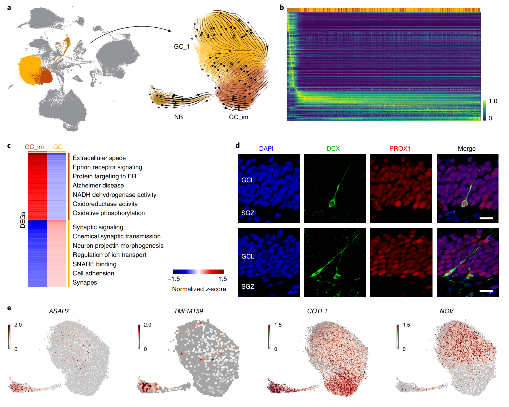
a. GC genesis-related 群体 (neuroblast, n= 1,898 cells; GC_im, n = 7,547 cells; and GC_1, n= 23,491 cells，在UMAP可视化中突出显示) 用 UMAP 重新分析，而 RNA velocities(RNA速度) 以箭头表示。RNA velocity 显示从神经母细胞(neuroblasts，NB)到 immature GCs，最终再到 mature GCs 的 GC specification trajectory。
b. 由 RNA velocities 得到的 GC 成熟过程中暂定驱动基因的热图。
c. 为了分析成熟和未成熟 GC 之间的差异，我们对 immature GC(GC_im，n=7,547) 和 mature GC(GC_1，n=23,491)进行了 DEG 分析。右边显示了功能富集结果，成熟GCs的上调基因参与了神经元的功能，如化学突触传递(chemical synaptic transmission), 神经元投射形态发生(neuron projection morphogenesis) 和 SNARE binding pathways。这与成熟的GCs的功能是相一致的。
d. 免疫染色证实在 SGZ 中存在 immature GCs。DCX, immature neuron marker; PROX1, GC marker; DAPI, nuclei。
e. 新的标记基因表达的 UMAP 可视化。这些标记基因分别为 neuroblasts (ASAP2 and TMEM159), immature GCs (COTL1)，mature GCs (NOV)。
Fig7. 成年猕猴海马 DG 中 GCs 的成熟过程
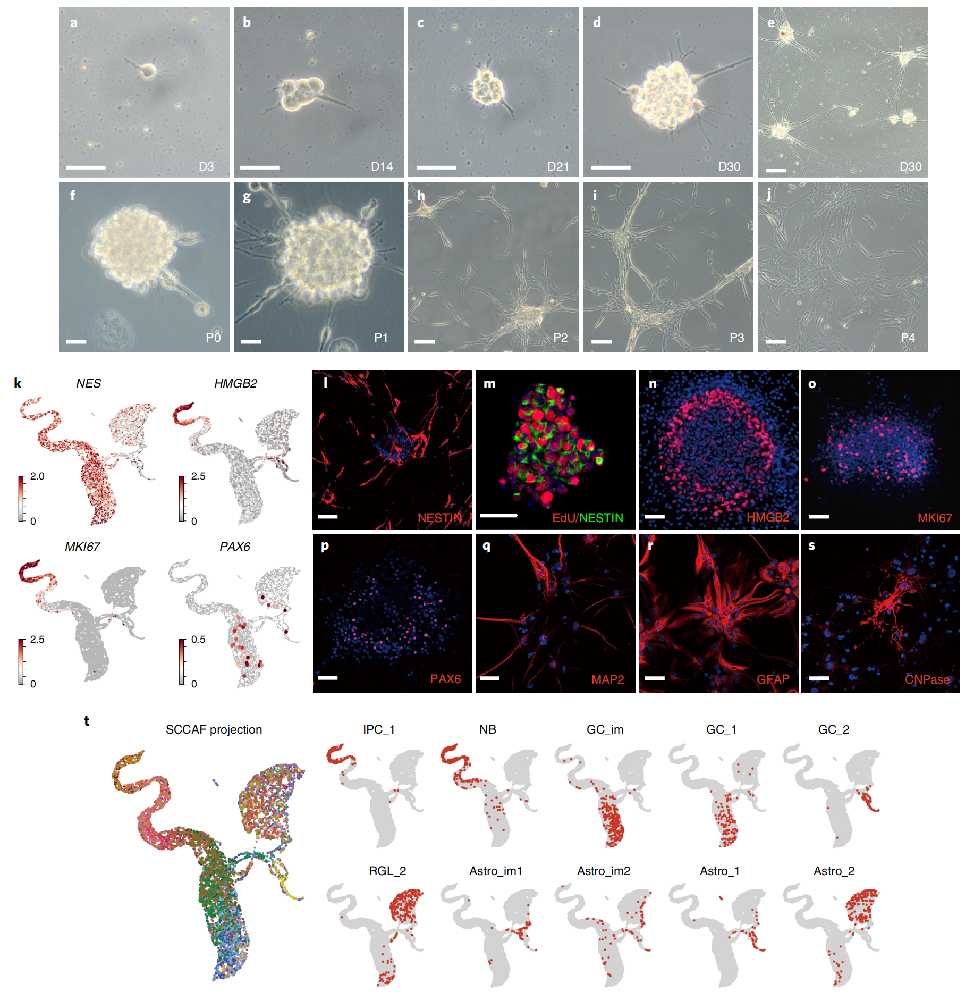
为了确认神经球的 NSC 特性，我们通过 scRNA-seq 对 6988 个神经球细胞进行了转录组分析。
a–j. 两个培养的成年猕猴海马神经球克隆的体外记录过程。
k. 培养的球细胞(n=6988 cells)的选定 marker genes UMAP 可视化。NES(RGL marker); HMGB2(IPC marker); MKI67(proliferating cell marker); PAX6(neural progenitor marker)。
i. 培养的猕猴海马神经球细胞对 NSC marker NESTIN 具有免疫反应性。
m. 大多数细胞被 NESTIN 和 EdU 荧光标记。
n. proliferating neural progenitor marker HMGB2
o. proliferating cell marker MKI67
p. neural progenitor marker PAX6
q. neuronal marker MAP2
r. astrocyte marker GFAP
s. oligodendrocyte marker CNPase
t. 左：UMAP可视化显示了从分离的成年猕猴海马细胞中增殖培养球形细胞的遗传异质性。这些颜色代表了猕猴基于回归的SCCAF投影结果，使用了与图1d相同的配色方案。右图：用SCCAF投影染色的UMAP可视化结果为选择性群体。红点表示预测的细胞类型的分布。
Extended Results：
Extended Data Fig1. 数据质控
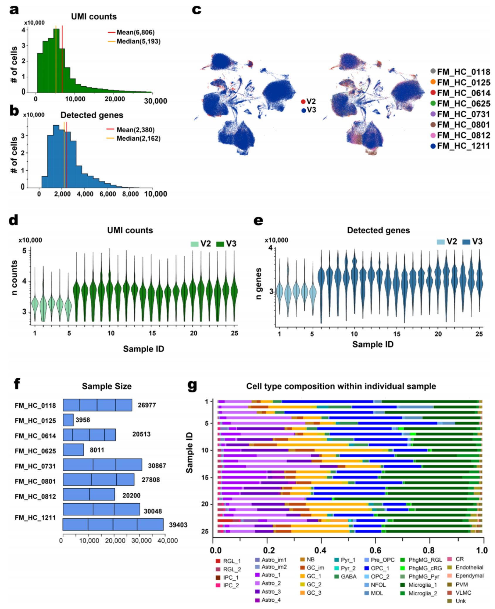
ab. counts 数和 gene 数，显示了均值和中位数
c. 不同 10x version 和 animal ID 的 UMAP展示
d. 不同 sample 的 UMI counts
e. 不同 sample 的 genes
f. 不同动物的细胞数目
g. 不每个样本的类型组成
Extended Data Fig2. 海马细胞群中富集的基因调控网络(gene regulatory networks，GRNs，termed regulons)
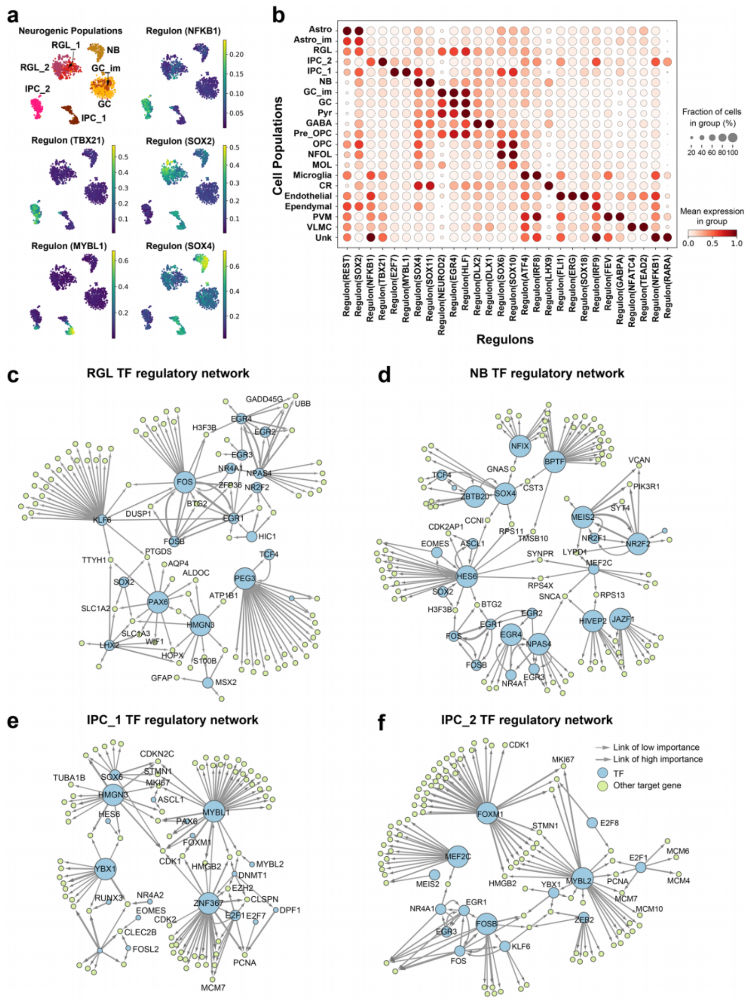
a. neurogenic-related 群体的 regulon score tSNE plot
b. 基因调控网络富集评分
c-f. 通过 SCENIC 软件进行转录因子调控网络预测
Extended Data Fig3. 与年龄相关的群体分布和基因表达的变化
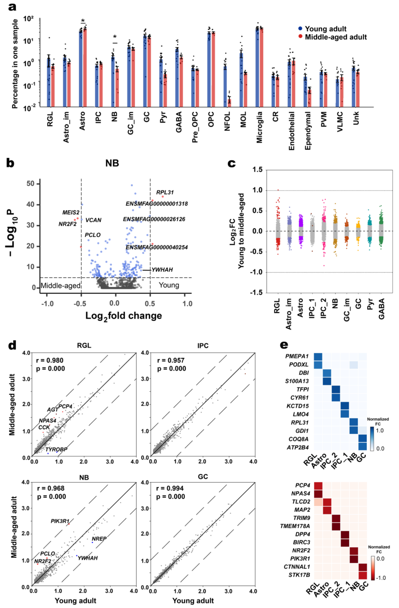
a. 按年龄分组的样本分布
b. Y4–6(Young) 和 Y13–15(Middle-aged) neuroblasts(NB，神经母细胞)之间的 DEGs
c. Young 与 Middle-aged 相比，neurogenic-related 细胞类群所有基因的 Log2 FC 的 stripchart
d. Young adult 与 Middle-aged adult 的 neurogenic-related 细胞类群的 Pair-wise comparison，横纵轴为基因的表达量，中间实线表示表达量相等，两边虚线表示有两倍差异，蓝红点表示 Log2FC>0.5 的基因。
e. 上边蓝色热图是 Young adult 中高表达的基因，下边红色热图是 Middle-aged adult 中高表达的基因。
发现在 Young adult 与 Middle-aged adult 中都存在所有的细胞类群，并且对于大多数细胞类群两者之间没有显著差异。这与在成年小鼠中发现的低但可持续水平的 neurogenesis 相一致，表明在成年猕猴中广泛存在着跨年龄和性别群体的神经发生。
Extended Data Fig4. 与性别相关的群体分布和基因表达的变化
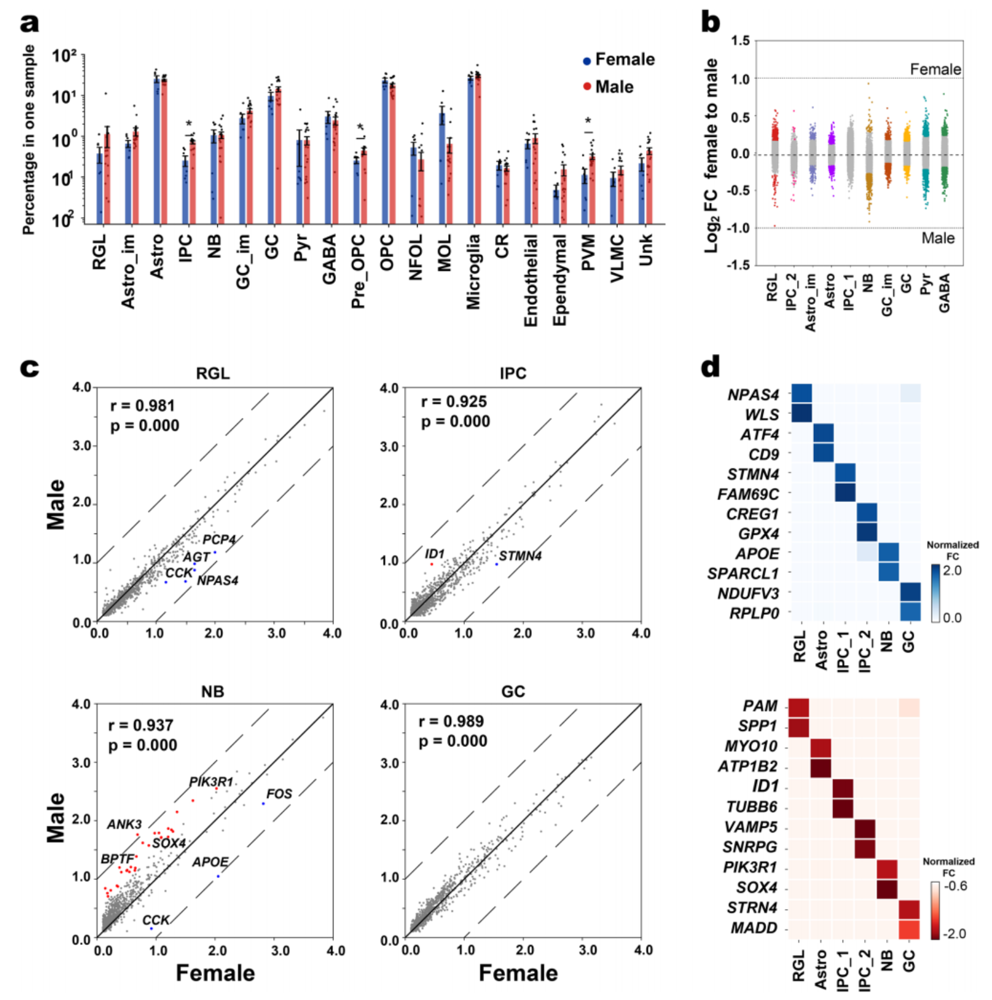
a. 按性别分组的样本分布
b. Y4–6(Young) 和 Y13–15(Middle-aged) neuroblasts(NB，神经母细胞)之间的 DEGs
c. females and males 相比，neurogenic-related 细胞类群所有基因的 Log2 FC 的 stripchart
d. females and males 的 neurogenic-related 细胞类群的 Pair-wise comparison，横纵轴为基因的表达量，中间实线表示表达量相等，两边虚线表示有两倍差异，蓝红点表示 Log2FC>0.5 的基因。
e. 上边蓝色热图是 females 中高表达的基因，下边红色热图是 males 中高表达的基因。
雄性(n=6)和雌性(n=2)猕猴之间的细胞组成和基因表达差异也很细微。两组间的细胞分布和基因表达均无显著差异，说明雄性和雌性猕猴的神经源性过程(neurogenic process)高度相似。
Extended Data Fig5. 典型神经标记物的免疫染色证实了SGZ中神经前体细胞的存在
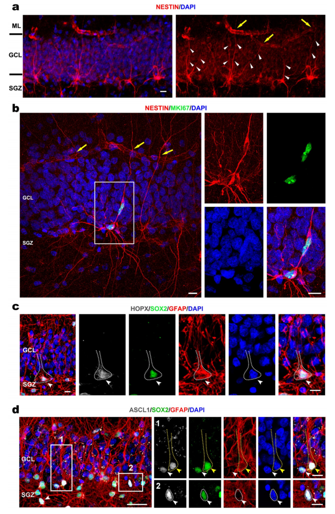
a. 对典型的神经祖细胞标记物 NESTIN 的免疫染色显示，神经前体细胞(neural precursor cells，NPCs)在 SGZ 层，通过顶端突起到达 ML 层。
b. 增殖标记物(proliferating marker) MKI67 的免疫染色进一步验证了来自 SGZ 层的 proliferating NPCs 的存在。
c. 同样，将典型的神经祖细胞标记物 HOPX 与 SOX2 和 GFAP 共染色，发现 SGZ 中具有典型的 RGL 形态的 RGLs。
d. ASCL1+ SOX2+ GFAP+ 同时标记 RGLs 和增殖的神经祖细胞(proliferating neural progenitors)。
Extended Data Fig6. 猕猴成年海马转录组细胞类型与成熟的小鼠数据集对齐
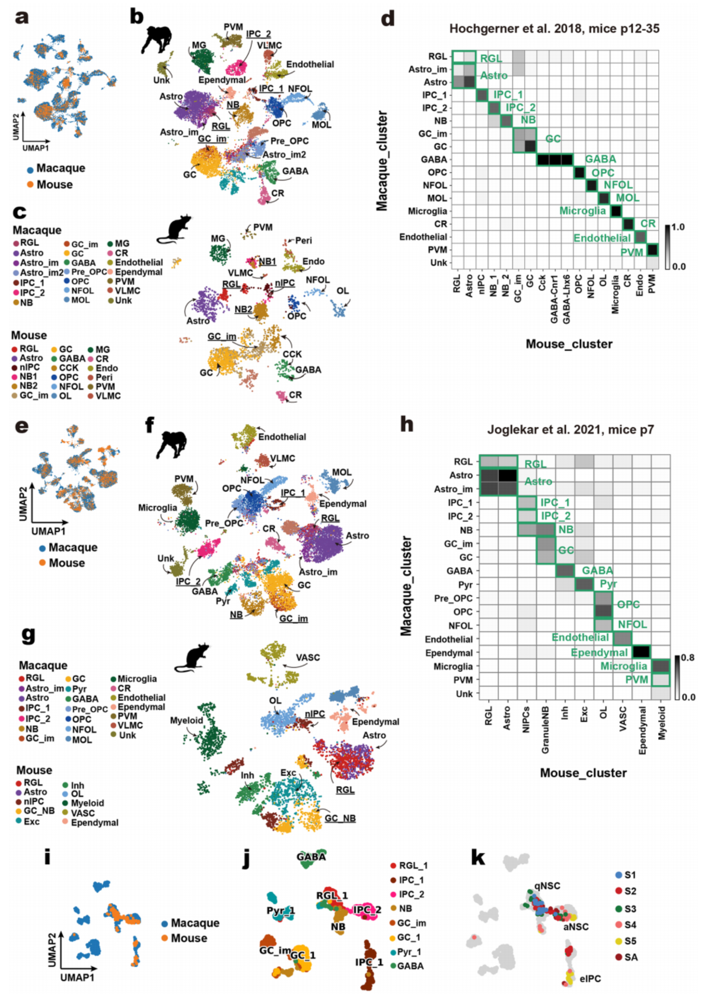
Extended Data Fig7. 猕猴成年海马转录组细胞类型与成熟的人类数据集对齐
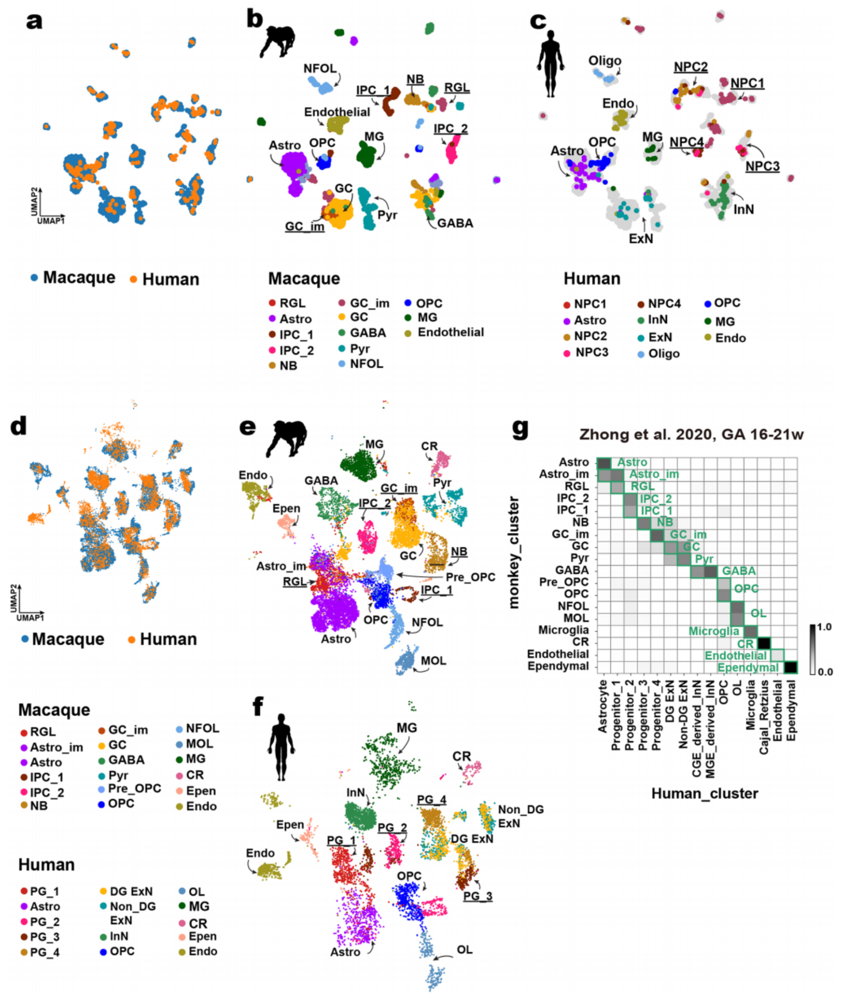
Extended Data Fig8. 神经源性相关群体的谱系
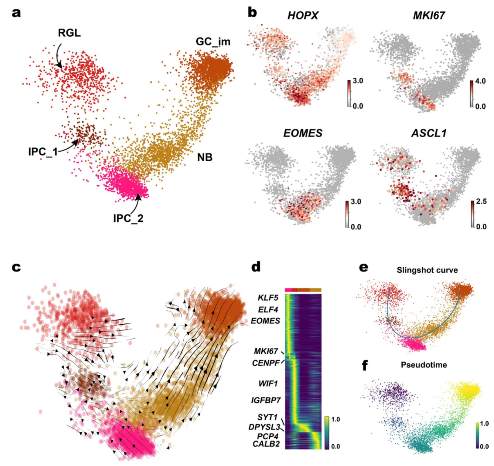
a. neurogenic-related population 的 PCA 可视化。
b. 典型的 neurogenic marker genes 的 PCA 可视化。
c. 通过 scVelo 分析，带 RNA velocities 箭头的 PCA 可视化。
d. 拟时序相关基因的表达。
e. 通过 Slingshot 分析，推断出的神经源性谱系。
f. 从 Slingshot 中得到的拟时序分析表明了从 RGL→IPC→NB→GC 的轨迹。
Extended Data Fig9. 在猕猴和小鼠之间的基因富集情况的比较
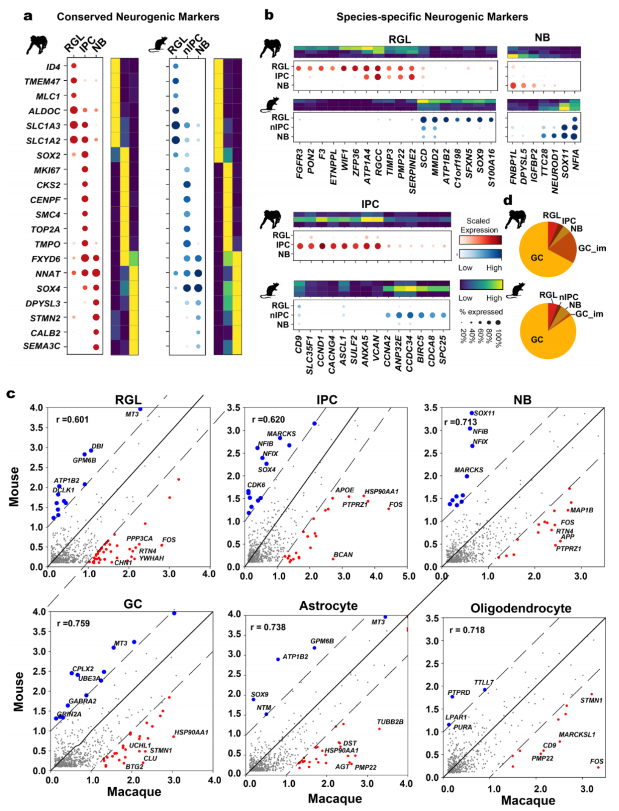
a. 在小鼠和猕猴之间保守的 Neurogenic markers。
b. 只在猕猴或小鼠中富集的物种特异性 marker genes。
c. 比较猕猴和小鼠的 RGLs、IPCs、neuroblasts(NB)、GCs、Astrocytes、Oligodendrocytes 的差异基因分析。
d. 猕猴(n=39555)和小鼠(n=3711)的神经源性相关细胞组成。
这些基因表达谱的差异表明了啮齿类动物和灵长类动物之间的神经源性过程的差异。
Extended Data Fig10. 培养的海马神经球的神经球形成过程及基因表达
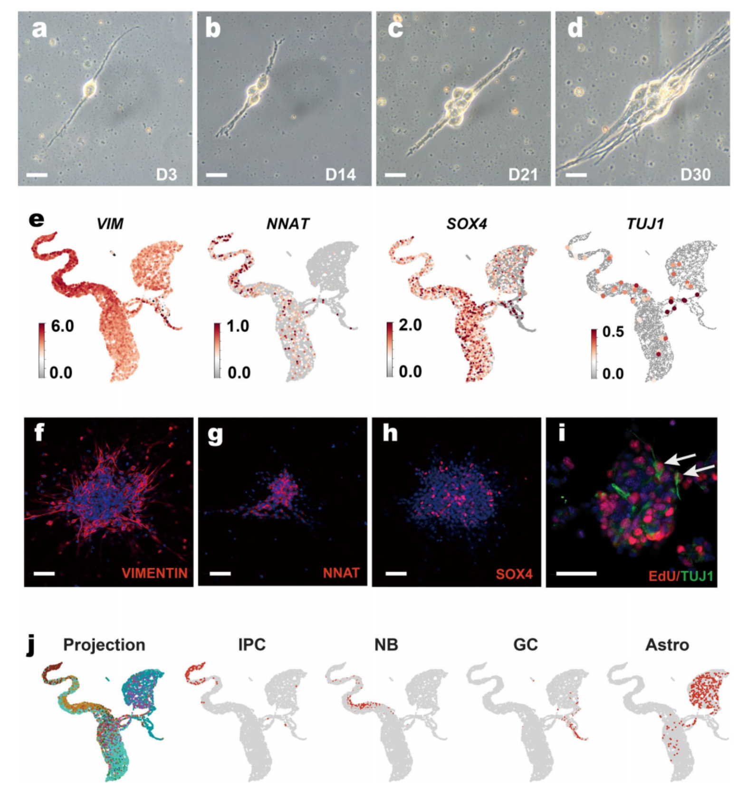
a-d. 一个培养的成年猕猴海马神经球克隆的体外记录过程。
e. 培养的球形细胞(n=6,988 cells)的选择性标记基因的 UMAP 可视化。VIM(RGL and astrocyte marker); NNAT(novel neuroblast marker); SOX4(neuroblast marker); TUJ1(neuronal marker)
f-i. 不同培养时期各 marker gene 的免疫荧光染色
j. 从 Hochgerner_1 数据集中投射的转录组细胞类型的 UMAP 可视化。红点表示预测的细胞类型的分布。IPC, intermediate progenitor cell; NB, neuroblast; GC, granule cell; Astro, astrocyte。